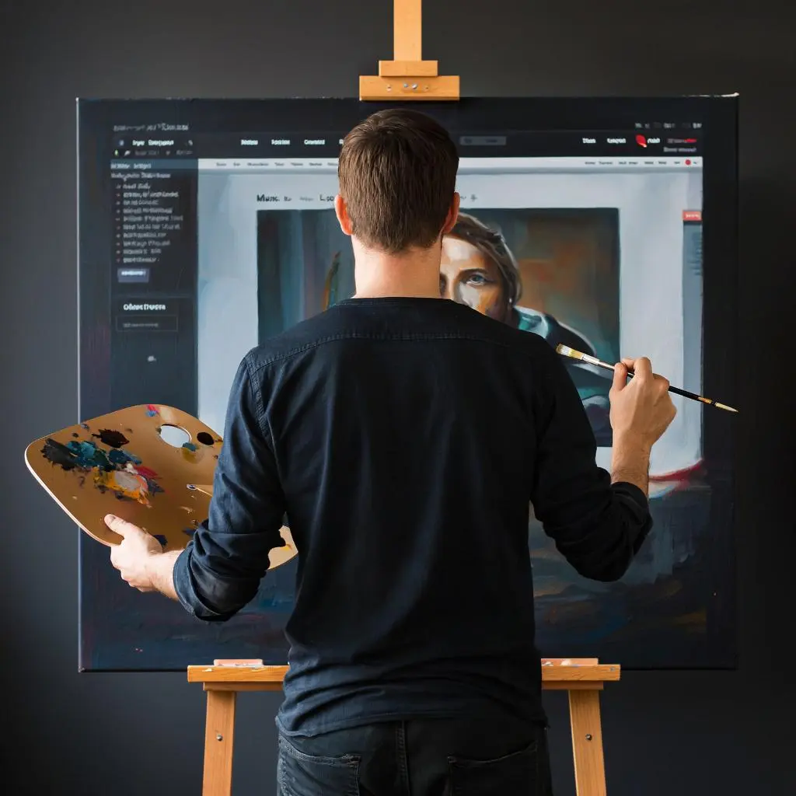
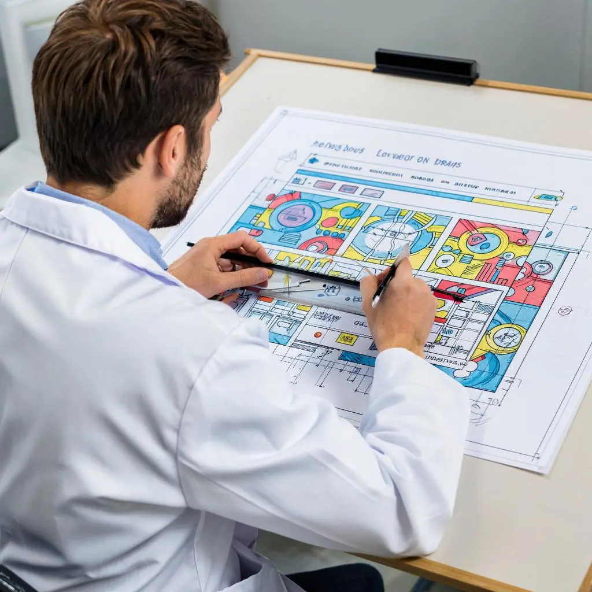
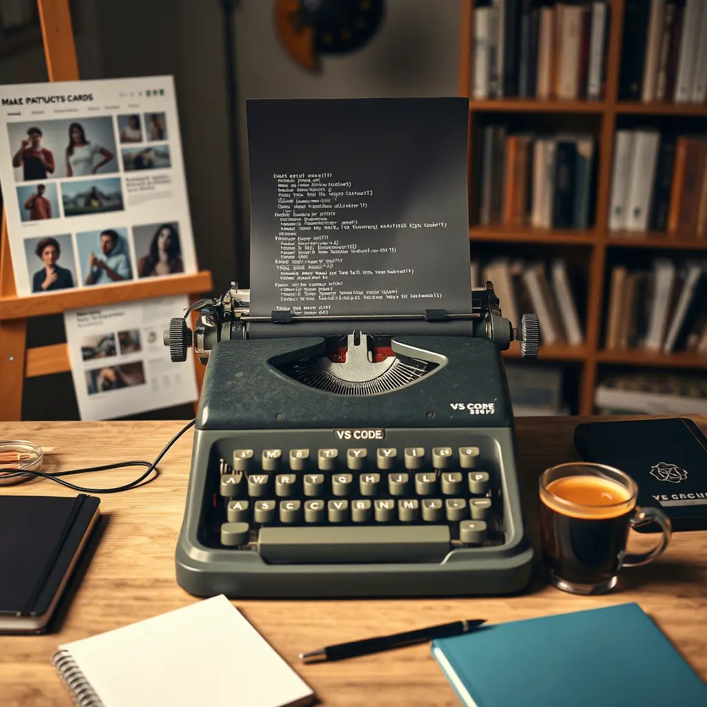

Этапы создания сайта
-

Создание сайта — это как живопись на цифровом холсте. Каждый элемент, будто мазок кистью, тщательно выверен: цвет, форма, структура. Здесь сплетаются вдохновение и логика, эстетика и функциональность. Как художник перед мольбертом, веб-дизайнер оживляет идею, превращая её в пространство, где каждый посетитель чувствует настроение, находит путь и возвращается с теплом. Это не просто сайт — это картина, написанная кодом и светом.
-

Даже в цифровом мире точность остаётся искусством. Как инженер с рейсшиной у чертежа, верстальщик внимательно сверяет каждый элемент макета: отступы, размеры, пропорции. Пиксель в пиксель — так рождается идеальная разметка. Ведь даже малейшее отклонение может нарушить баланс интерфейса. Точная вёрстка — это не просто код, это уважение к дизайну, к пользователю и к самому делу.
-

Создание сайта — это цепь точных действий. Сначала художник задаёт образ, как живописец — на цифровом холсте. Затем каждый элемент тщательно измеряется, проверяется, приводится к идеалу. И только после этого начинается вёрстка: мы переносим этот замысел в код, используя современное оборудование и передовые инструменты. Мощные компьютеры, точные редакторы, адаптивные технологии — всё это помогает превратить макет в живой, работающий сайт, где каждый пиксель на своём месте.
-
Финал пути. После точных замыслов, чёткой вёрстки и тонкой доводки — клиент встречает свой сайт. И радость — мгновенная, искренняя. Не маска, а настоящий восторг. Потому что это не просто работа. Это то, чего он ждал.